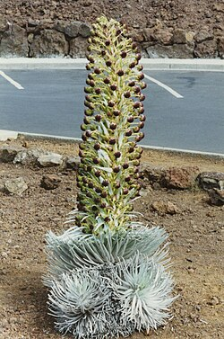
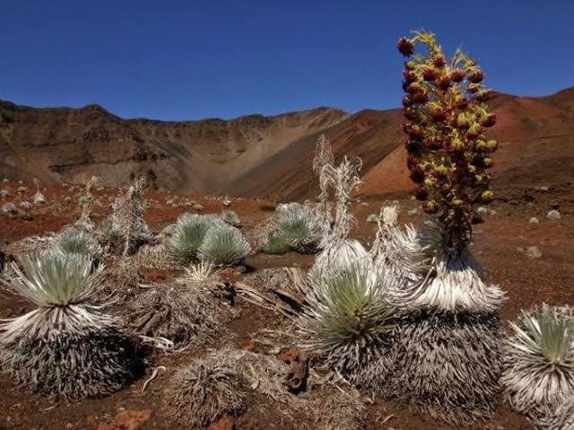
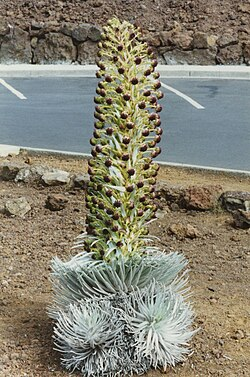
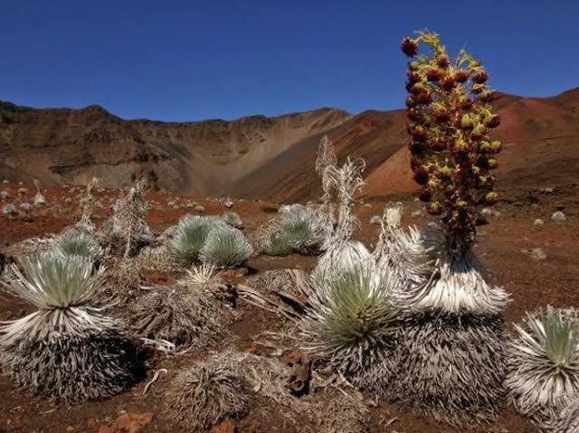
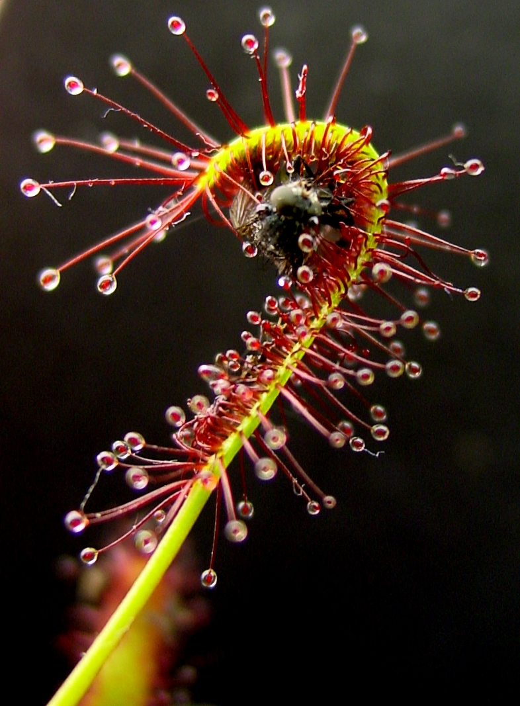
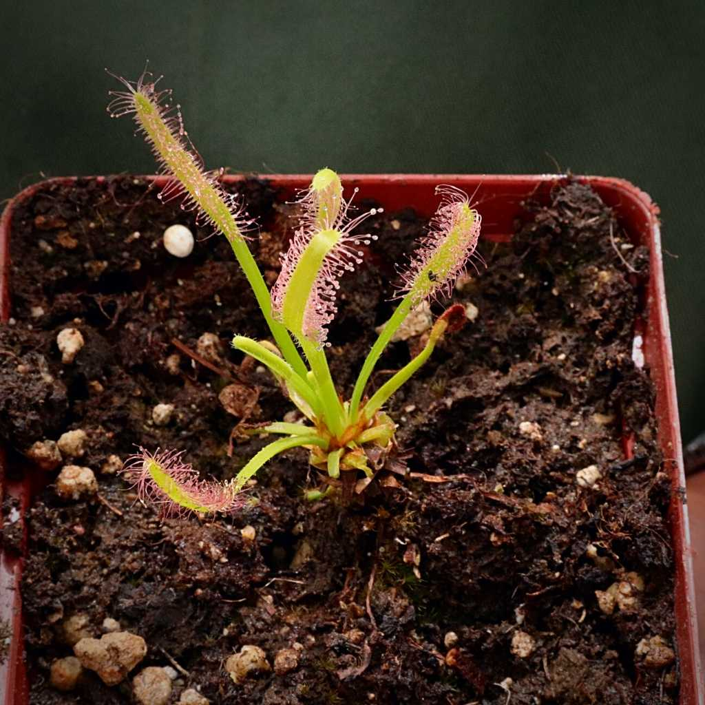
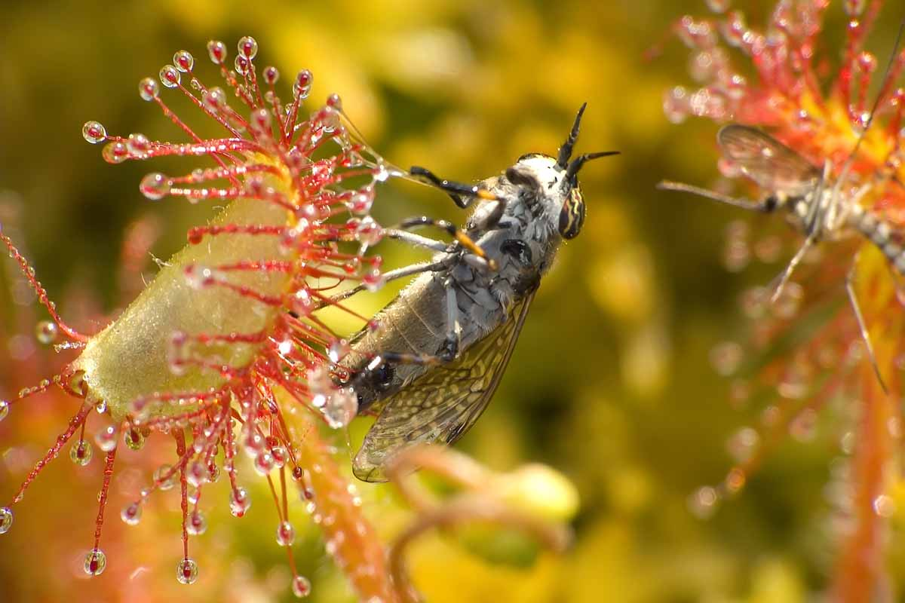
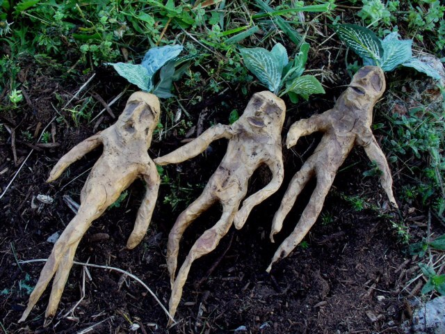
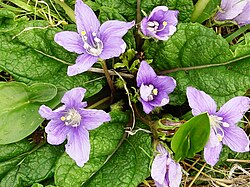

Hello, Fellow plant enthusiast!
Today's cool plants:
Stinking Corpse Lily

Rafflesia or stinking corpse lily, is a genus of parasitic flowering plants in the family Rafflesiaceae. The species have enormous flowers, the buds rising from the ground or directly from the lower stems of their host plants; one species has the largest flower in the world. Plants of the World Online lists up to 41 species from this genus; all of them are found throughout Southeast Asia.
Western Europeans first learned about plants of this genus from French surgeon and naturalist Louis Deschamps when he was in Java between 1791 and 1794; but his notes and illustrations were seized by the British in 1798 and were not available to Western scientists until 1861. The first British person to see one was Joseph Arnold in 1818, in the Indonesia rainforest in Bengkulu, Sumatra, after a Malay servant working for him discovered a flower and pointed it out to him. The flower, and the genus, was later named after Stamford Raffles, the leader of the expedition and the founder of the British colony of Singapore.
The following is from Arnold's account of discovering the flower:
Here I rejoice to tell you I happened to meet with what I consider as the greatest prodigy of the vegetable world. I had ventured some way from the party, when one of the Malay servants came running to me ... To tell you the truth, had I been alone, and had there been no witnesses, I should, I think, have been fearful of mentioning the dimensions of this flower, so much does it exceed every flower I have seen or heard of.
Vivid contemporary accounts documenting some of the most inaccessible species of Rafflesia are described in the popular science book, Pathless Forest: The Quest to Save the World's Largest Flowers, by botanist Chris Thorogood based at the University of Oxford Botanic Garden.
Monkey orchid


Dracula simia, known also as the monkey-like Dracula, is an epiphytic orchid originally described as part of the genus Masdevallia, but later reclassified as part of genus Dracula. The arrangement of column, petals and lip resembles a monkey's face. The plant blooms at any season with several flowers on the inflorescence that open successively. Flowers are fragrant with the scent of a ripe orange. The monkey orchid is native to the cloud forests of Ecuador, Peru, and Colombia. Although it was first documented in Ecuador, its natural habitat extends across these three countries. Currently, this orchid is in danger of extinction due to habitat destruction and over-collection.
Silversword
 

The Haleakalā silversword, Argyroxiphium sandwicense subsp. macrocephalum, has numerous sword-like succulent leaves covered with silver hairs. Silversword plants in general grow on volcanic cinder, a dry, rocky substrate that is subject to freezing temperatures and high winds.
The skin and hairs are strong enough to resist the wind and freezing temperature of this altitude and protect the plant from dehydration and the sun.
The plant's base of leaves, arranged in a spherical formation at ground level of the plant, dominates for the majority of the plant's life—which may be greater than 50 years. The leaves are arranged so that they and the hairs of the leaves can raise the temperature of the shoot-tip leaves up to 20 °C (68 °F), having adapted to the extreme high-altitude temperatures by focusing the sunlight to converge at this point and warm the plant.
The other subspecies, Argyroxiphium sandwicense subsp. sandwicense (Mauna Kea silversword), is found on Mauna Kea. They differ primarily in the inflorescence shape—broader in the Haleakalā plants (less than 4 times as long as wide) and narrower on Mauna Kea (4.3–8.6 times as long as wide). The Haleakalā subspecies also generally has more ray florets, 11–42 versus 5–20 for Mauna Kea
Cape sundew
 
Drosera capensis, the Cape sundew, is a perennial rosette-forming carnivorous herb in the flowering plant family Droseraceae. It is native to the Cape region of South Africa, where it grows in permanently wet, nutrient-poor habitats.
Its elongated, roughly oblong leaves are held semi-erect and have a distinct petiole. It is quite a variable plant with several recognised growth forms, some of which form a short stem. As in all sundews, the leaves are covered in stalked glands that secrete sticky mucilage. These attract, trap, and digest arthropod prey, obtaining nutrients that supplement intake from the substrate in which the plant grows. D. capensis has dramatically mobile leaves that curl around captured prey, preventing its escape and facilitating digestion.
First recorded in the late 17th century, D. capensis was one of the five Drosera species included in the first edition of Carl Linnaeus' Species plantarum. A relatively large, 'showy' species that flowers readily and is considered very easy to grow, it was cultivated in Europe as a curiosity from the mid-18th century and is now one of the most widely-grown sundews. It has also been extensively studied, including as a potential source of bioactive compounds of pharmacological interest, and was the first sundew to undergo whole-genome sequencing. Although often uncommon and localised in its native range, it has become naturalised in several countries following deliberate introductions, and is listed as an invasive species in New Zealand.
Mandrake
 
A mandrake is the root of a plant, historically derived either from plants of the genus Mandragora (in the family Solanaceae) found in the Mediterranean region, or from other species, such as Bryonia alba (the English mandrake, in the family Cucurbitaceae) or the American mandrake (Podophyllum peltatum in the family Berberidaceae) which have similar properties.
The plants from which the root is obtained are also called "mandrakes". Mediterranean mandrakes are perennial herbaceous plants with ovate leaves arranged in a rosette, a thick upright root, often branched, and bell-shaped flowers that produce yellow or orange berries.
They have been placed in different species by different authors. They are highly variable perennial herbaceous plants with long thick roots (often branched) and almost no stem. The leaves are borne in a basal rosette, and are variable in size and shape, with a maximum length of 45 cm (18 in). They are usually either elliptical in shape or wider towards the end (obovate), with varying degrees of hairiness.
Because mandrakes contain deliriant hallucinogenic tropane alkaloids and the shape of their roots often resembles human figures, they have been associated with magic rituals throughout history, including present-day contemporary pagan traditions.